Idris Hedhibi
Bilingual (AR/EN, RTL) design systems, WCAG 2.2 AA accessibility, and AI products. 6+ years across Qatar, Saudi Arabia & Tunisia — with partners like Microsoft and UN ESCWA.
Scroll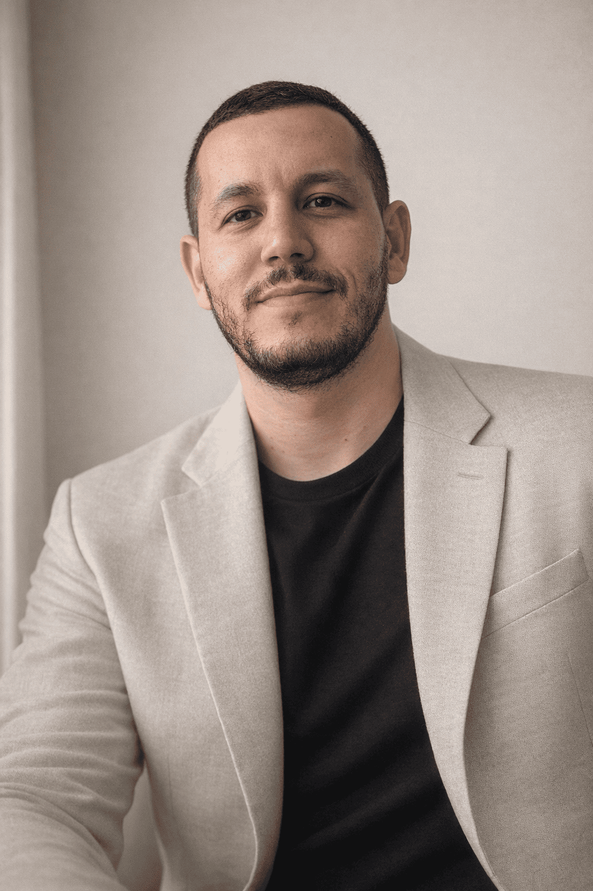
Selected Work
Design, business
& policy.
I'm a Senior Product Designer with 6+ years designing national-scale digital products for government, banking and public-health institutions across Qatar, Saudi Arabia and Tunisia.
I lead end-to-end — from discovery research and UX through high-fidelity UI — and support delivery into production with front-end skills in HTML5, CSS3, Tailwind and Bootstrap. I specialise in the parts most teams find hardest: bilingual Arabic/English systems with true RTL, accessibility that survives real testing, and AI-powered interfaces where the interaction model is still being invented.
Most recently I led design across Qatar's Ministry of Labour — multiple national platforms, a scalable design system, and AI labour-market intelligence built directly with UN ESCWA and Microsoft.
Signature strengths
Bilingual AR/EN & RTL design systems · WCAG 2.2 AA accessibility · Government & enterprise AI platforms
UX & Strategy
Research · Journey mapping · Service blueprints · UX audits · Heuristic evaluation · Usability testing
UI & Systems
Design systems · Interaction design · Bilingual typography · Data visualisation
Front-end & tools
HTML5 · CSS3 · Tailwind · Bootstrap · Figma · Miro · Power BI
The full story
lives in my CV.
Six years of government & enterprise design across Qatar, Saudi Arabia and Tunisia — every role, project and outcome, laid out in detail.
Download CVDGA Accessibility
Making Saudi Arabia's most-used government platforms usable for everyone — then writing the national standard so they stay that way.
Platforms everyone must use — failing those who need them most
Three platforms sit at the centre of daily life in Saudi Arabia: Tawakkalna, Sehatty and Absher — identity, health and core government services. Using them isn't optional. Yet for citizens who rely on screen readers, or elderly users with low vision, key journeys broke down.
One failure stood out across every platform: screen readers were announcing buttons as "images", so a visually impaired user couldn't tell what an interactive element did, or even that it was interactive. Form inputs went unlabelled, and error messages appeared in the wrong place in the reading order.
There was no national accessibility standard for designers and developers. My task: prove the gap with real users, then build the reference that would close it.
Designing a standard under real conditions
- High-stakes, high-traffic. Mandatory national services where a change touches millions.
- Bilingual AR/EN with full RTL. Accessibility had to hold in both reading directions.
- No existing reference. I was defining the national standard, not applying one.
- A fixed 7-month engagement (2023), with research, gap analysis and the guidelines authored in parallel.
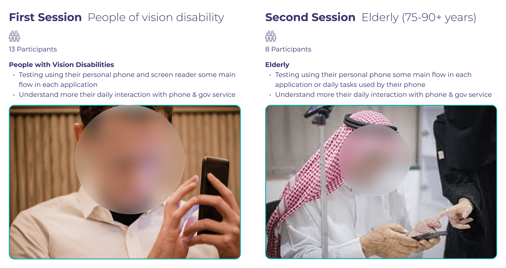
Testing with the people the system was failing
I ran inclusive testing with 21 participants — 13 with vision disabilities and 8 elderly citizens aged 75–90+ — using screen readers (VoiceOver) and task-based usability methods, benchmarked against WCAG 2.1 (A/AA/AAA).
Methods: moderated task testing, screen-reader walkthroughs, focus groups, and a mapped People-with-Disabilities (PoD) life journey — with CX consultants, PoD specialists and government stakeholders.
Turning recurring failures into a standard
The sessions surfaced the same fixable failures again and again. For each, I defined a rule teams could apply:
- Buttons read as "images" → mandated semantic HTML and ARIA labelling so every control announces its role.
- Unlabelled inputs & misplaced errors → form-design and error-handling standards, with errors tied to their field in reading order.
- Low contrast & small targets failing elderly users → documented contrast ratios, minimum touch-target sizes and visible focus states.
A guideline people would actually use
I chose a focused, example-led guideline over an exhaustive WCAG checklist — fewer criteria, each paired with real AR/EN before-and-after examples — because a reference that sits unread protects no one.
I rejected the exhaustive-checklist approach even though it looked more complete: adoption, not completeness, was the goal.
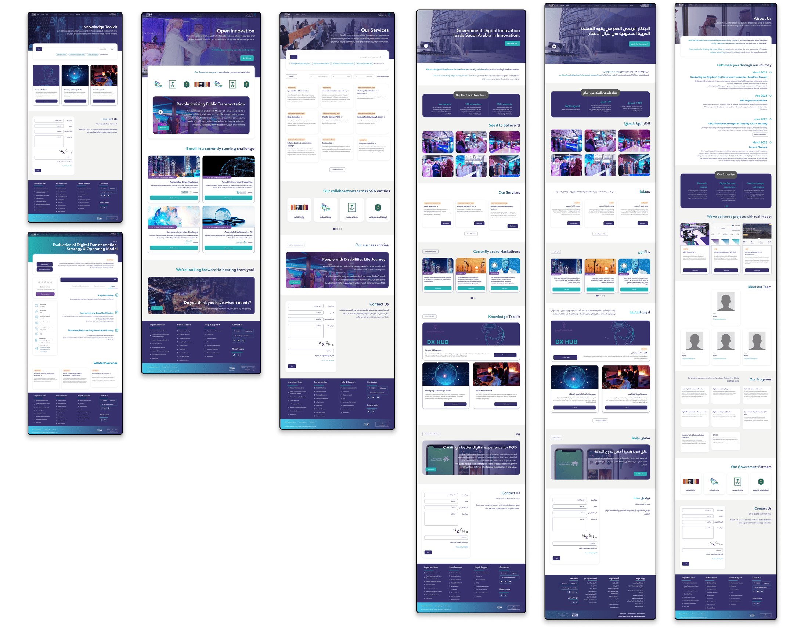
The guidelines, and a reference build to prove them
I authored the national Accessibility Guidelines — a single designer-and-developer reference aligned to the DGA WCAG 2.2 framework — and delivered a full UI redesign of the DGA website as the reference implementation: accessible colour system, contrast-compliant typography, visible focus states, and a documented component library.
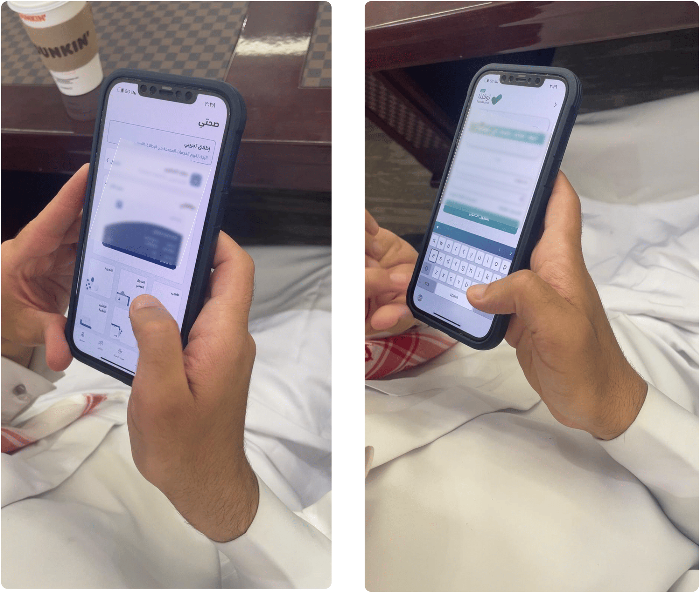
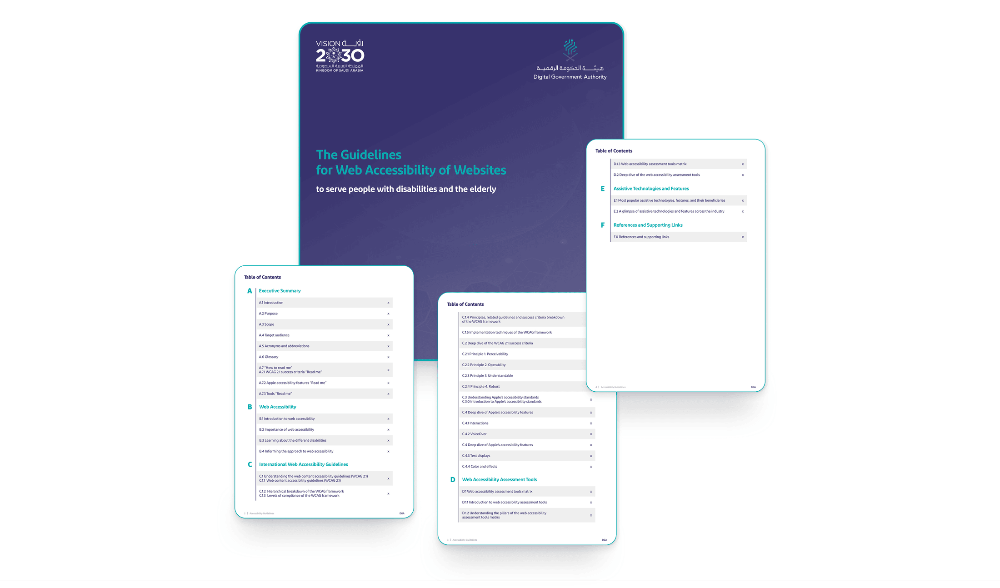
A national reference, not a report on a shelf
- Delivered Saudi Arabia's national accessibility guidelines — adopted as the designer/developer reference for the DGA.
- The redesigned DGA site served as the reference implementation for WCAG-compliant government design.
- The work fed the DGA's Digital Inclusion Program and supported Saudi Arabia's #1 ranking in MENA for e-government service maturity (ESCWA 2022/2023) and #3 globally in the World Bank's Digital Government Maturity Index.
In government, a standard only matters if people use it. Designing the guidelines for adoption — bilingual, example-led, developer-ready — mattered as much as the research. It's where I learned to treat accessibility as a system, not a checklist.
LMIS & MOL360
Designing the interface for how a country reads its own labour market — a connected ecosystem of AI-powered platforms, not a single dashboard.
Decisions worth billions, made without a clear view of the data
Qatar's Ministry of Labour needed a real-time, evidence-based view of its workforce to set national policy. The data existed, but scattered, unvalidated and unreadable for the officials who had to act on it.
My brief wasn't one screen. It was to design how an entire ecosystem would collect, validate, structure and surface labour data at a scale the country hadn't had before — and how AI forecasting would sit on top.
What shaped the design
- Ministerial users, not analysts. Officials needed insight at a glance, not raw tables.
- Unproven data sources. We couldn't commit to production before knowing which data was viable.
- Bilingual AR/EN + Power BI. Complex visualisation that had to work in both directions.
- Dual accountability. Aligned to Qatar National Vision 2030 and UN ESCWA / SDG reporting.
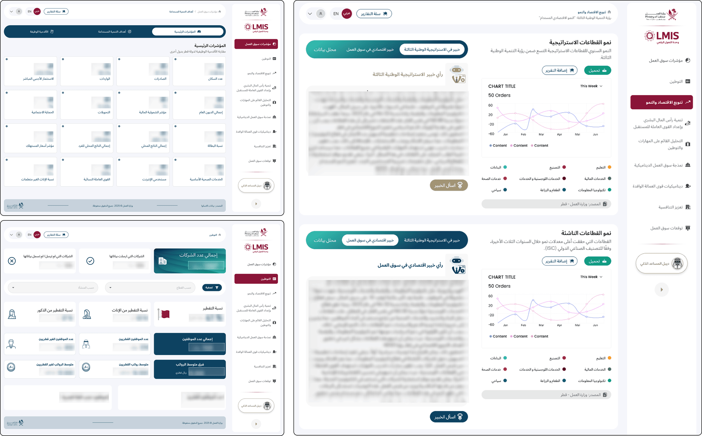
Prove before you build: an ecosystem of POCs
Instead of jumping to a production dashboard, I designed 7+ proof-of-concept platforms, each testing a specific data source before anyone committed to full development. Three layers: the core LMIS dashboard, the 360 data platform, and an AI forecasting module on top.
I worked directly in workshops with UN ESCWA, shaping how the AI modules would integrate with the data architecture.
Designing for insight, not for data density
The hardest decisions were about what to surface and what to hold back. Every choice about how data was structured changed how officials would read — and act on — the labour market.
The key decision was to design 7+ proof-of-concept platforms to validate each data source before committing to a production system, rather than building the full intelligence layer up front. It was slower to show a finished product, but it meant we never built polished dashboards on data that turned out to be unusable.
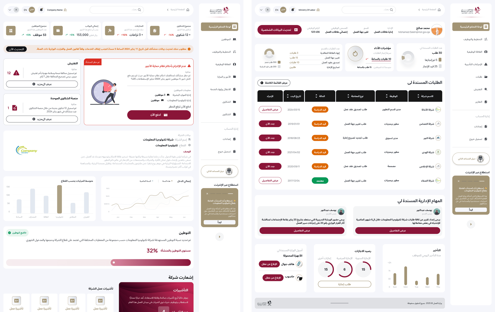
The ecosystem, launched
The 360 platform I designed launched as the MOL360 initiative with Microsoft (Dec 2024), using Azure OpenAI for real-time insight. It was later extended with a multi-agent AI system — eight agents on Microsoft's AutoGen framework — that now processes applications in under two minutes, a task that previously took days or weeks.
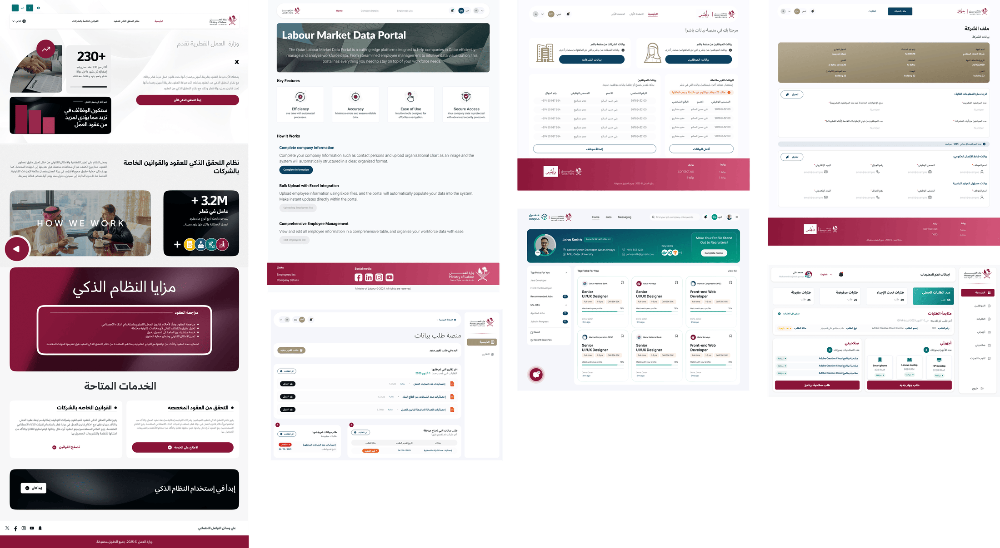
From scattered data to a national tool
- MOL360 launched with Microsoft; its multi-agent AI cut a multi-day process to under 2 minutes.
- LMIS presented at the National Workforce Strategy 2024–2030 launch, under the Prime Minister's patronage.
- Phase 1 launched December 2025; the system now combines labour-market data with a central AI agent that forecasts job demand for ministerial planning.
The most complex thing I've designed — not because of the UI, but the stakes. The POC-first approach taught me that government design is about validating before committing.
Design System
One system to make nine national platforms feel like one government — in two languages, two reading directions, across three teams.
Nine platforms, nine different governments
The Ministry was shipping platform after platform — each built by different people, each looking different. For citizens, the same government felt like a dozen unrelated services. For the teams, every screen was rebuilt from scratch, and Arabic RTL was handled ad hoc.
There was no shared foundation. I was the first and only designer positioned to build one.
What made this harder than a typical system
- True bilingual RTL. Every component had to mirror cleanly between Arabic and English.
- Mixed adopters. 2 Ministry departments (7–8 developers) plus an outsourced team.
- Handoff without full automation. Figma-to-code wasn't fully automated, so the system — variables, states, documentation — had to be unambiguous enough for developers to build from directly.
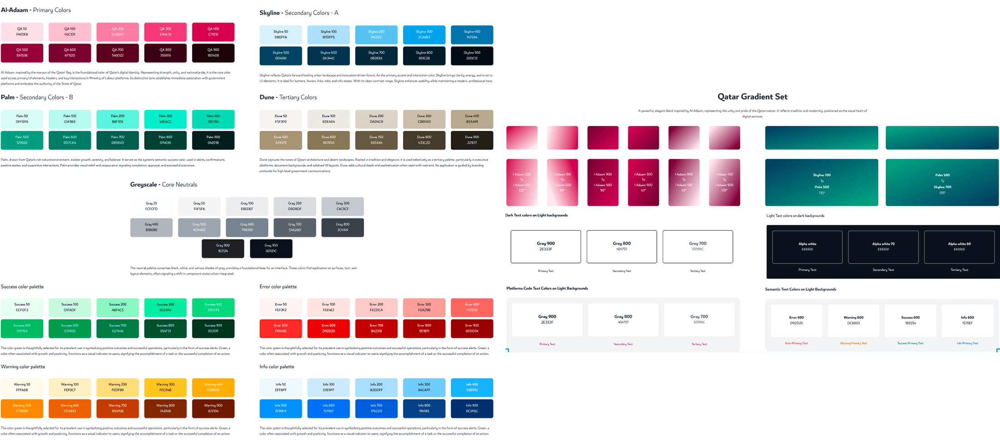
Audit first, then foundations, then components
I started with a UX audit across the platforms to find what was already being rebuilt repeatedly — the real components. From there I set the foundations (spacing, colour, typography for Arabic + Latin, iconography, variables), then built components as bilingual pairs so RTL was native, not retrofitted.
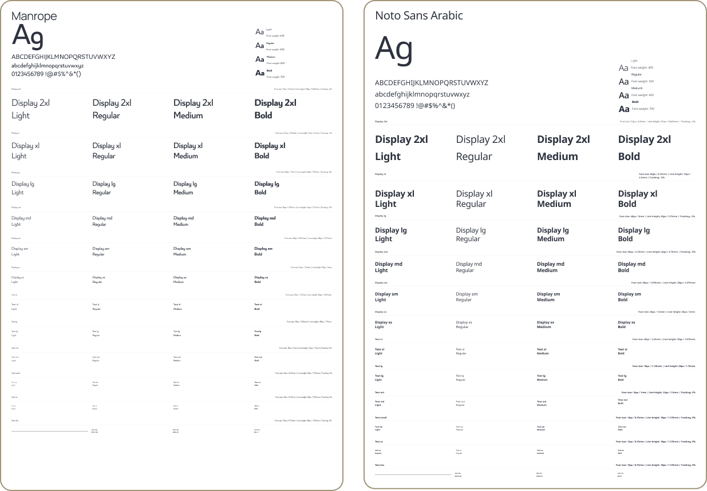
Building RTL in, not bolting it on
The core decision was to treat Arabic as a first-class citizen from the component level up, rather than designing in English and mirroring later. Every component was an AR/EN pair with logical properties, so developers got correct RTL by default.
I standardised on a dual-font system — Manrope for English (LTR) and Noto Sans Arabic for Arabic (RTL) — on a shared type scale, and built every value as a two-tier variable (primitive → semantic). That meant a single primitive change propagates across the whole system, and teams couldn't drift into per-platform fonts and one-off colours.
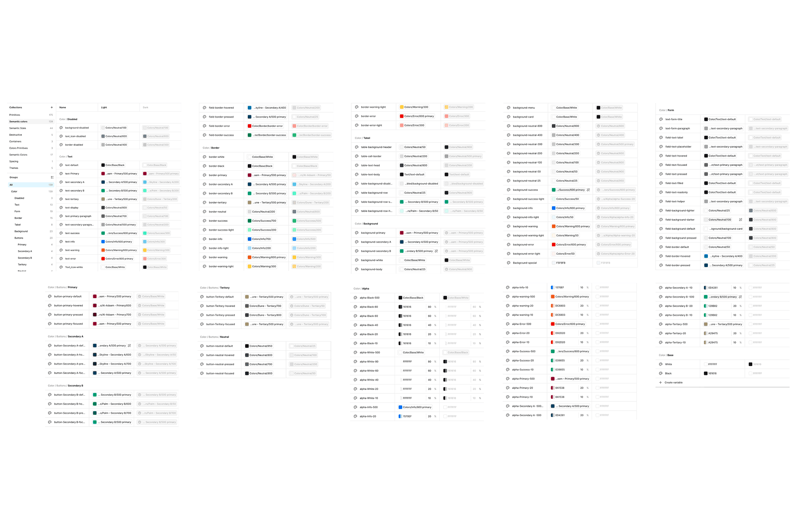
A 50+ component system, adopted at scale
A scalable design system of 50+ reusable components with foundations, variables and full interaction states, adopted by 2 Ministry departments and 1 outsourced team, across 9+ national platforms.
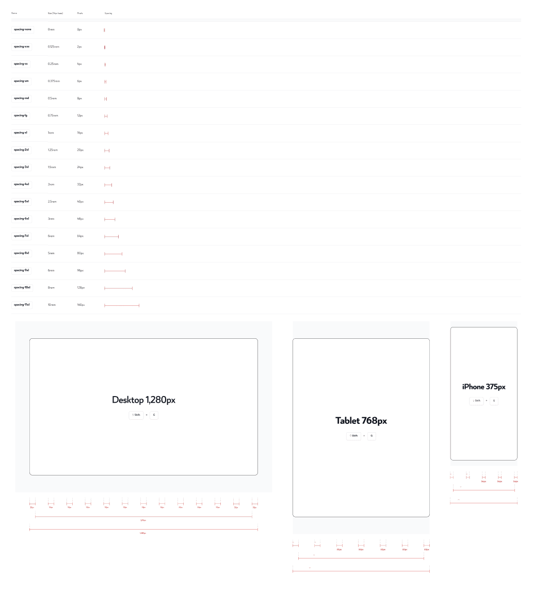
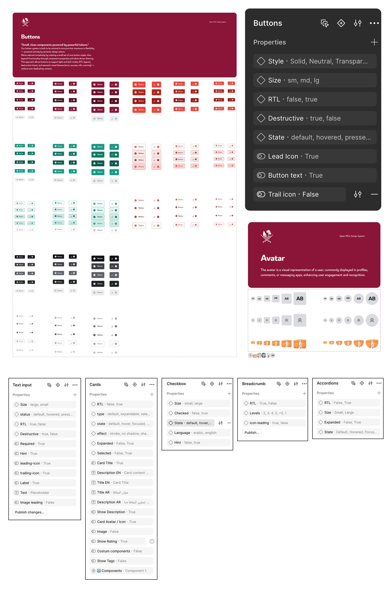
Consistency as infrastructure
- 50+ components across 9+ platforms and 3 teams — one coherent government experience.
- Native bilingual RTL support, removing per-project rework.
- Benchmarked against the UAE, Singapore and GOV.UK design systems, and built to WCAG 2.1 AA — so teams stopped rebuilding buttons, inputs and cards from scratch on every project.
A design system is only real when other people build with it without asking you. What mattered most wasn't the components — it was making them clear and bilingual enough that three teams could ship consistent, accessible Arabic/English services on their own.
Evax
A country's vaccine rollout, designed for two very different users at once — millions of citizens and the health workers serving them — under real national pressure.
One platform, two users who couldn't be more different
Tunisia needed to vaccinate a nation, fast. One system serving two populations with opposite needs: ordinary citizens — of every age and digital comfort level — booking and tracking doses, and health workers managing throughput at speed in clinics.
Get the citizen side wrong and people can't get vaccinated. Get the worker side wrong and the queues stop moving. Both had to work from day one, at national scale.
National scale, national urgency
- 8M+ citizens, every ability level. Including elderly and low-digital-literacy users.
- Two portals, one system. Citizen and health-worker experiences had to stay coherent.
- Speed. A live national rollout left no room for slow iteration.
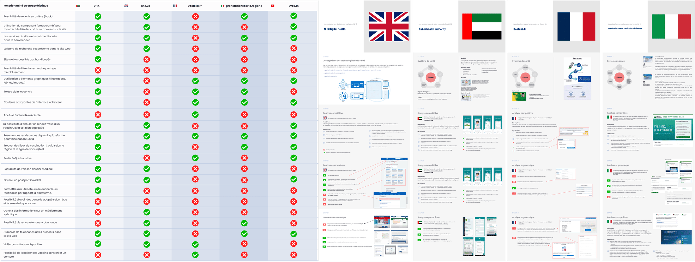
A two-portal architecture on a shared system
I architected a two-portal system — citizen and health worker — and designed the full UI for both on a modular design system so the two experiences stayed consistent while serving different jobs. Adopted by 2 Ministry of Health departments.
Research ran alongside, across 30+ hours of workshops and usability testing. I mapped 4 persona types — Tunisian citizens (with and without a national ID), foreign citizens, children, and vaccination agents — and validated comprehension across very different literacy levels, which is what kept the citizen flow simple.
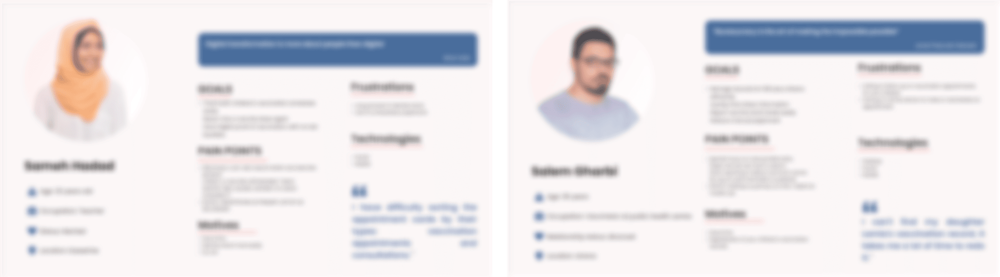
Two portals, built to move millions
The citizen portal made booking and tracking simple enough for any age; the health-worker portal kept clinics moving. Together they served 8M+ registered users and 13M+ doses, delivered with Tunisia's Ministry of Health and funded through German development cooperation (GIZ / BMZ).
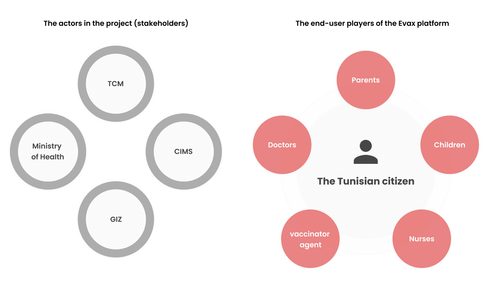
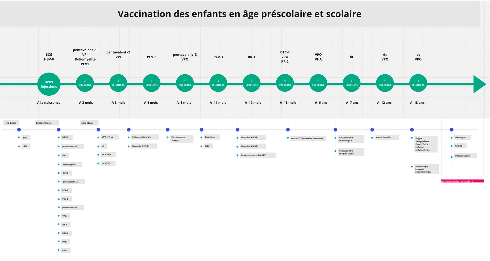
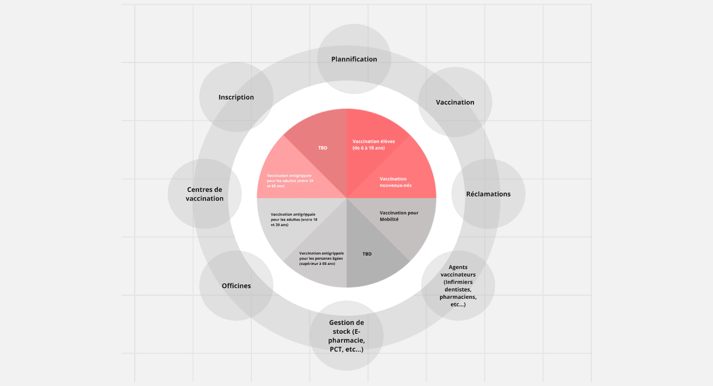
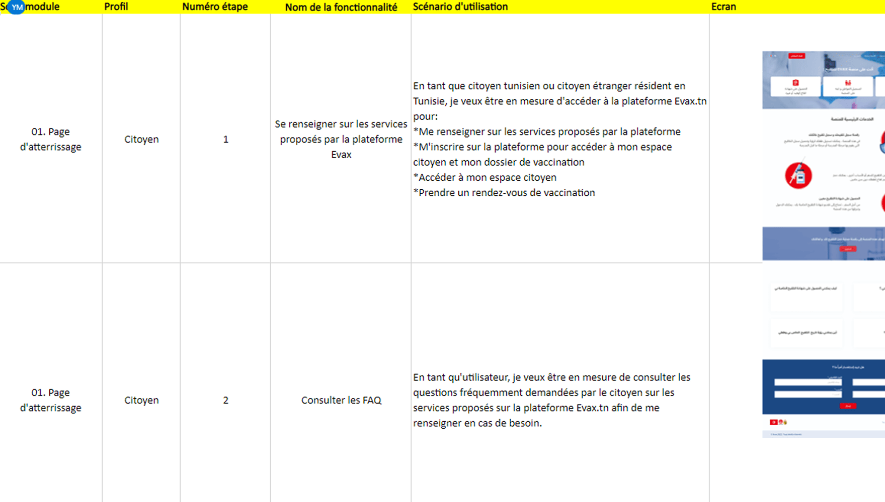
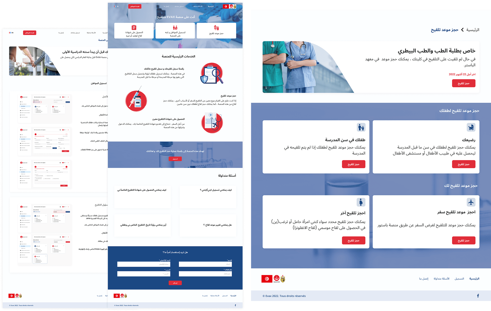
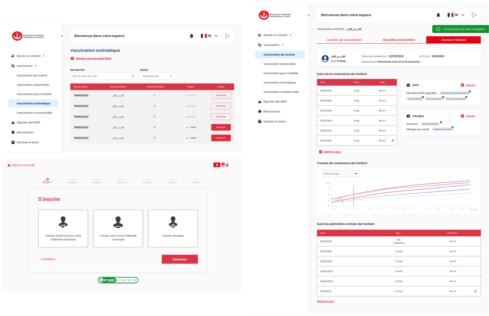
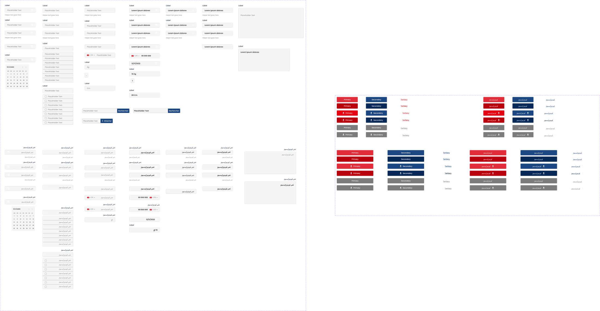
National impact, at speed
- 8M+ citizens served, 13M+ doses administered through the platform.
- A modular design system adopted across 2 Ministry of Health departments.
- 1,240 vaccination centres connected and 6,190+ health professionals onboarded; expanded in 2024 from COVID to all routine national immunisations, and presented at the Council of Arab Ministers of Health.
Evax was my first lesson in designing for an entire population at once — where "edge cases" are millions of real people. Two portals on one system taught me to hold very different users in mind without letting the product fracture.